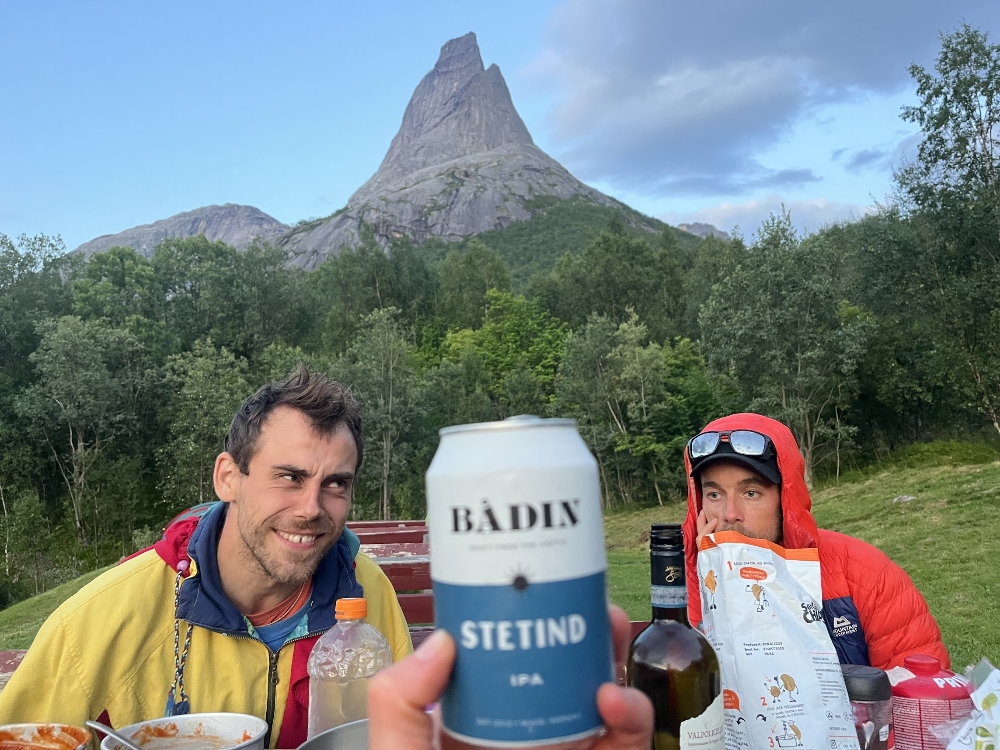

Climbing Stetind
Some photos! We spent first approximately 2 hours hiking to the so-called "Halls fortopp". We then tied ourself into to the rope and simul-climbed a few pitces off difficulty N3, before entering the crux as "Mysosten", which is a 15m climb of grade N4+. After this we basically scrambled with no rope to the top. Good day! 8 hours car2car.
Photo gallery
Use the arrows or dots to move through the slideshow. Update the image files in the HTML to match your own photos.